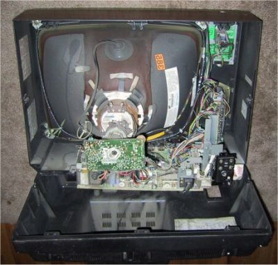

Zi de zi ne bazăm pe funcţionarea unor circuite de o complexitate uluitoare (figura 1).
|  | Figura 1. Circuitele electrice din interiorul unui televizor. |
Oricât de complicate ar fi aceste circuite, funcţionarea lor poate fi înţeleasă şi controlată folosind câteva legi surprinzător de simple!